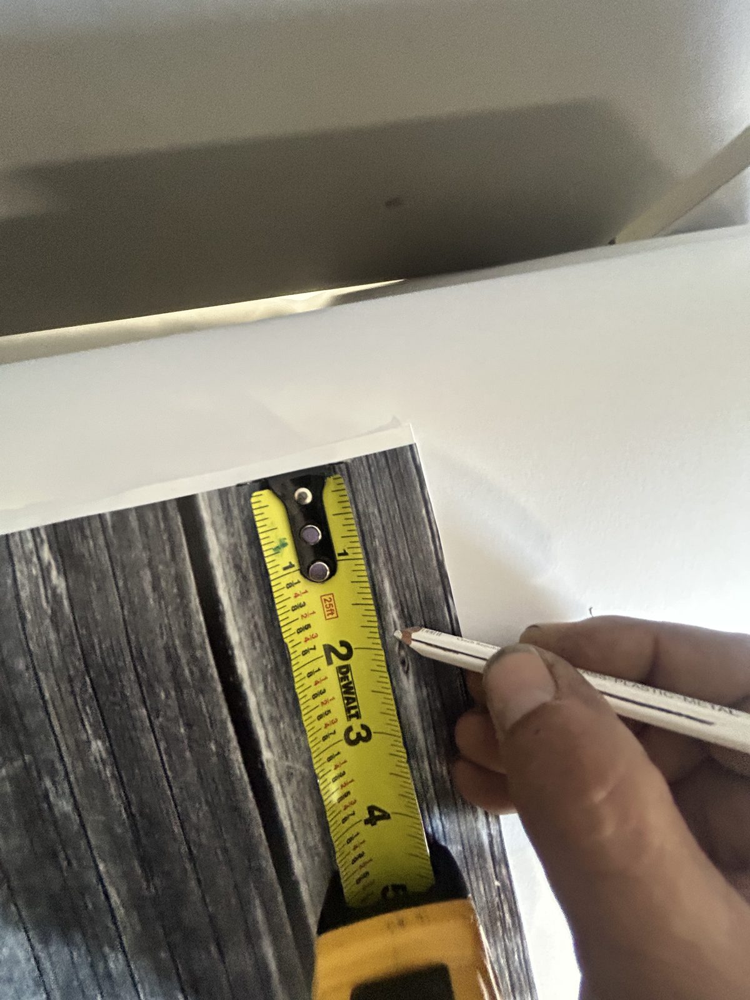

New to vinyl wrap installs and on your own?
You finished training, or you just started, and now you are on jobs with nobody to call. Film is in the trash, a panel came back, and you are guessing. Here is a straight first-weeks plan so you don't have to learn every lesson the hard way.
My trainer left, and I was alone on jobs I wasn't ready for. WRAP 911 is the help I never had.

The failure
- You waste film on every panel.
- Edges lift, rivets tent, seams don't line up. Comebacks.
- The same questions keep stopping you, and there is nobody in the bay to ask.
Why it happens
- Trained by watching. Watching isn't doing. You see the result, not the reasons.
- Nothing written down. Every installer does it a little different. You get mixed answers, or no answer at all.
- No drills. First time you touch a rivet is on a customer's vehicle.
- Feedback comes late. You find out it was wrong when it fails.
- Never read the TDS. You don't know the film maker publishes the rules for that exact film.
The fix: a simple first-weeks plan
- Prep and cleaning first. Most failures start before the film comes out. Follow the cleaning steps the film maker's TDS calls for.
- Knife control on scrap. Light pressure, sharp blade, never on paint or glass. Knifeless tape where a blade shouldn't go.
- Measure before you cut. Measure the panel, add bleed, mark it. Short film is a failed panel.
- Drills, one at a time: flat panel, edge and tuck, rivet line, seam and overlap, trim around a lamp. Use a scrap panel or a practice door.
- Read the TDS yourself. Pick the 3M, Avery Dennison or BriteLine film you run most. Find the heat, stretch and post-heat guidance. Look it up again on the next job. Don't guess.
- QC every drill. Same checklist every time: edges down, rivets worked, no bridging, seams aligned, post-heat done.
- Small real jobs next. Spot graphics and lettering before full wraps, when you can.
- Explain it back to yourself. Say the why out loud, or write it in a note on your phone. If you can't say why, you'll skip it when it matters.
What good looks like
- You have the next step on your phone, so you are not stuck guessing.
- You check your own rivets and edges before you call the job done.
- You follow the TDS without waiting for someone to remind you.
- You waste less film, and fewer panels come back.
Heat, stretch and post-heat: follow the film maker's TDS (technical data sheet) for the exact film on the job. 3M, Avery Dennison and BriteLine all publish one. This page does not give numbers on purpose.
Don't learn this alone
My trainer left, and I was alone on jobs I wasn't ready for. WRAP 911 is the help I never had.
Get WRAP 911 on the App Store Open the free trainerSee what's in it
Free to download on the App Store. You can also open a free preview of the trainer on the web.